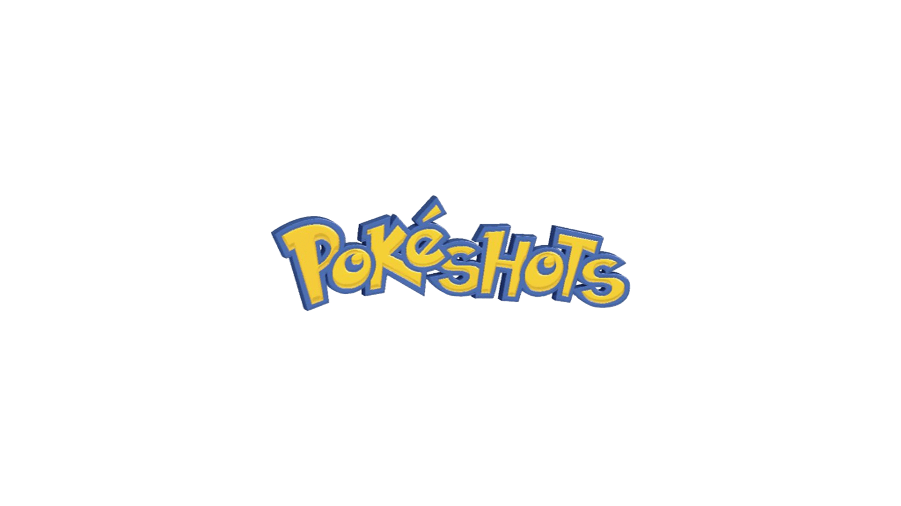

Bem-vindo ao Portfólio do Projeto

Este site foi desenvolvido para apresentar o progresso do nosso projeto acadêmico, organizado de forma clara e objetiva.
Quem Somos
Igor Hernandes
Curso: Engenharia de Software

Matheus Lourenço
Curso: Engenharia de Software

Daniel Becaria
Curso: Design Grafico

Eduardo Augusto
Curso: Engenharia de Software

Abner Matheus
Curso: Analise e desenvolvimento de sistemas
Tema do Projeto
Introdução: O projeto busca resolver o problema da falta de centralização de informações locais para os cidadãos.
Justificativa: A escolha do tema é relevante pois facilita o acesso a informações essenciais e promove a inclusão digital.
Extensão Curricular: O projeto se relaciona diretamente com a formação acadêmica, aplicando conhecimentos adquiridos em sala de aula em uma solução prática para a comunidade.
Comunidade
Público-alvo: Moradores da cidade que necessitam de acesso rápido a serviços e informações locais.
Benefícios: O projeto contribui ao oferecer uma plataforma acessível que conecta pessoas a serviços úteis, melhorando a qualidade de vida da comunidade.